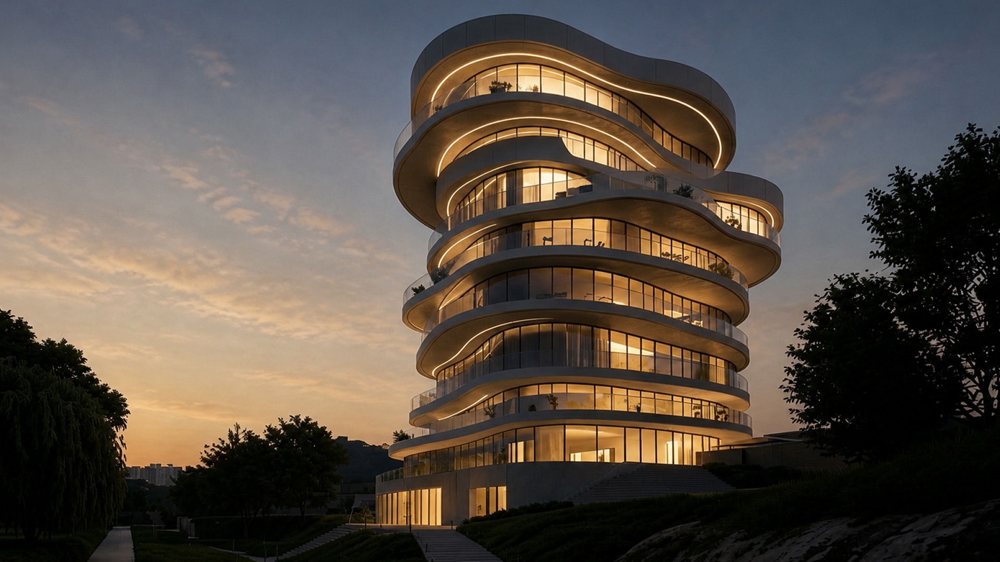
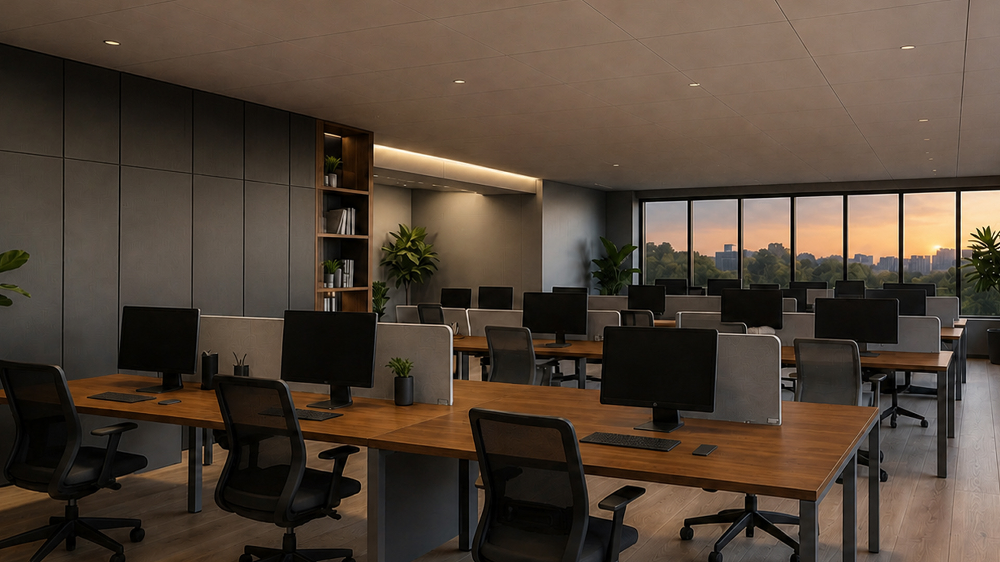
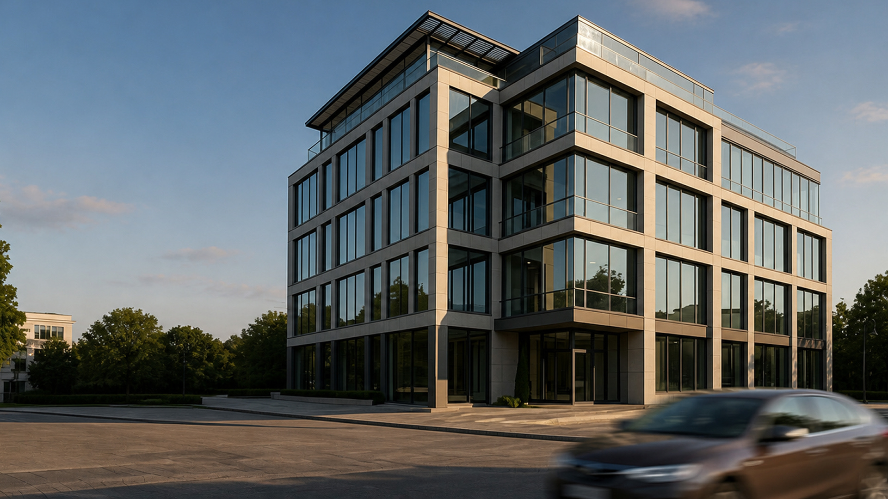
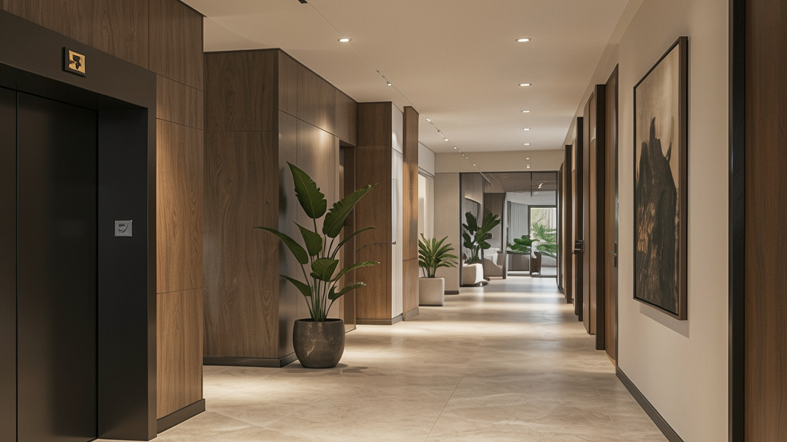

«Согласовываем архитектуру, конструктив и инженерию до стройки, а не решаем конфликты на объекте
Архитектура делового пространства, построенная на контрасте: выразительные арки, прозрачность стекла и характер металла объединены в единый городской силуэт
Проверяем, где можно строить, до того как вы влюбитесь в планировку
Геология, рельеф, инсоляция, подъезды и ограничения участка — до концепции. Иначе красивая планировка упирается в то, что на этом пятне её построить нельзя.

Согласовываем архитектуру, конструктив и инженерию до стройки, а не решаем конфликты на объекте
Все три раздела сводятся в одной модели. Коллизии видно на экране, а не в момент, когда балка проходит там, где по проекту шёл воздуховод.

Критические узлы проверяем до того, как их закроет отделка
Гидроизоляция, примыкания, уклоны и доступ к обслуживанию — на выезде, пока к ним есть доступ. После отделки любая ошибка стоит демонтажа.

Что входит в проект
Четыре этапа с понятным составом работ. В правой колонке — что остаётся у вас на руках после каждого из них.
Старт и участок
Изучаем ограничения участка, рельеф, инсоляцию, подъезды и сценарии жизни семьи: где работают, как приезжают гости, где хранятся вещи и как меняется дом зимой.
- Техническое задание
- Выводы по участку
- Согласованный состав задач
Концепция
Собираем планировки, объём, логику света, приватности и маршрутов. Проверяем ключевые решения на реализуемость в целевом бюджете до финального утверждения.
- Выбранную концепцию
- Планировочное решение
- Ключевые визуальные материалы
Проектирование
Согласовываем архитектуру, конструктив, инженерные системы, материалы и ключевые узлы. Фиксируем отметки, спецификации и привязки, по которым подрядчик может строить.
- Рабочую документацию
- Спецификации
- Понятный состав решений
Реализация
Отвечаем на вопросы подрядчиков, выезжаем на объект, фиксируем изменения и замечания. Критические узлы проверяем до того, как их закроет отделка.
- Отчёты с выездов
- Журнал изменений
- Актуальную документацию
Авторский надзор — это документ, а не заезд «посмотреть»
После каждого выезда вы получаете отчёт: что проверено, что не соответствует проекту, что исправить и кто отвечает. Ниже — фрагмент реального бланка.
- 01 Примыкание кровли к парапету выполнено без заведения гидроизоляции на вертикаль. Узел К-04 в рабочей документации. Ответственный: подрядчик по кровле · срок 21.03 Исправить
- 02 Уклон террасы 1,8% вместо проектных 2%. Проверено нивелиром до укладки покрытия — переделка не потребуется. Ответственный: прораб · срок 18.03 Исправить
- 03 Закладные под внешние блоки вынесены на техфасад согласно проекту. Доступ для обслуживания сохранён. Проверено на объекте Принято
- 04 Замена профиля остекления по инициативе подрядчика. Влияние на бюджет и вид фасада зафиксировано, изменение внесено в журнал и обновлённый чертёж. Согласовано с заказчиком 14.03 В документации
Полный цикл: от первой концепции и рабочей документации до авторского надзора на площадке.


Вопросы, которые задают до первой встречи
Здесь нет обещаний, за которые мы не отвечаем. Только то, что можем подтвердить процессом и документами.
До покупки участка или до выбора подрядчика. На этом этапе проще всего повлиять на ограничения и бюджет: мы посмотрим геологию, рельеф, инсоляцию и подъезды до того, как появится привязанность к конкретной планировке.
Да, мы работаем с внешними подрядчиками. Наша зона — проект и авторский контроль: помогаем прочитать сложные узлы до начала работ, отвечаем на вопросы по документации и фиксируем несоответствия в отчёте.
Нет. До геологии, проекта и состава работ честно назвать можно только диапазон и факторы, которые на него влияют: тип фундамента, конструктив, площадь остекления, инженерия и класс отделки. Мы не продаём иллюзию точной цены, чтобы потом её пересматривать.
Периодичность фиксируется договором и зависит от этапа. На ответственных работах — чаще: критические узлы проверяем до того, как их закроет отделка. После каждого выезда вы получаете отчёт с замечаниями, сроками и ответственными.
Да. Встречи и согласования проходят онлайн, образцы материалов сверяем по фото при дневном свете и дублируем очной приёмкой на объекте. Выезды на площадку в любом случае очные.
Сначала обсуждаем влияние на бюджет, срок и смежные разделы. Если изменение принимается — оно попадает в чертёж и журнал изменений, а не остаётся решением «на глаз» в переписке. В финале у вас остаётся актуальный комплект документации.
Расскажите, каким должен быть ваш дом
На первой встрече разберём участок, задачи семьи и подскажем, с какого этапа лучше начать. Это разговор, а не продажа проекта.
- Адрес или кадастровый номер участка
- Желаемые сроки
- Ориентир по бюджету
Студия
Дубай · Барселона
по договорённости